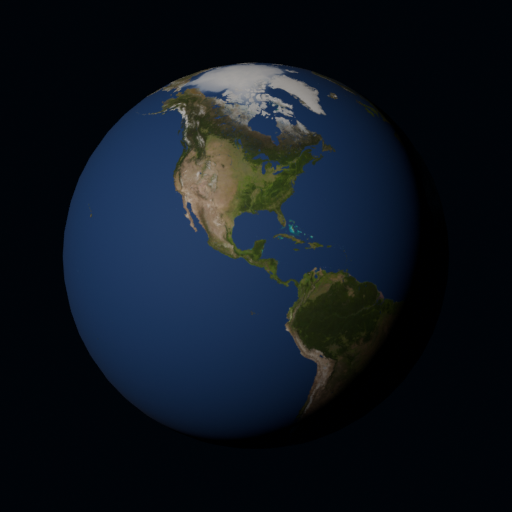
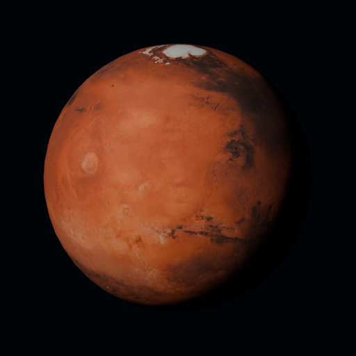
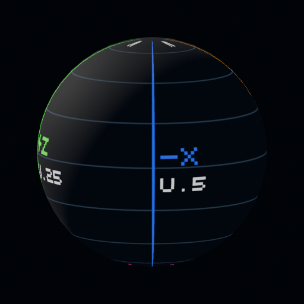
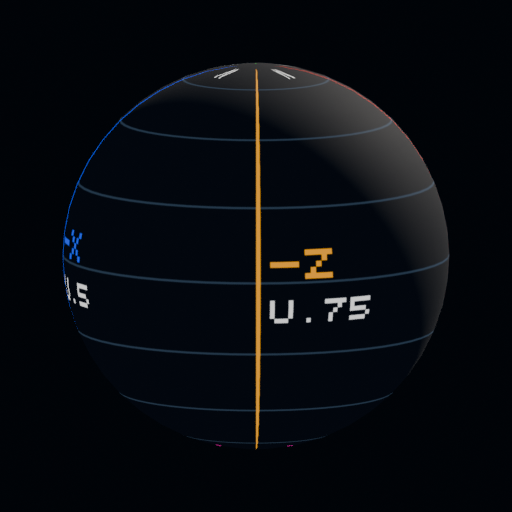
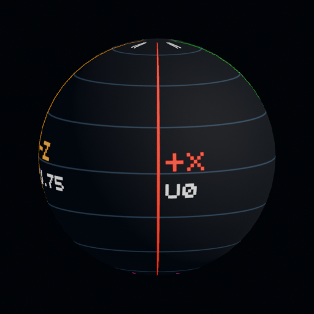
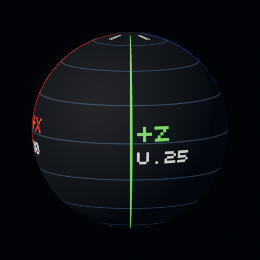

Actual asset proofs rendered in Blender CPU. Formula proxy images are not Unity captures. Native axis conversion, URP appearance and owner acceptance remain open. System witness preserves v1 UVs; its X-reflection views predict one receiver basis and do not establish a native defect.





